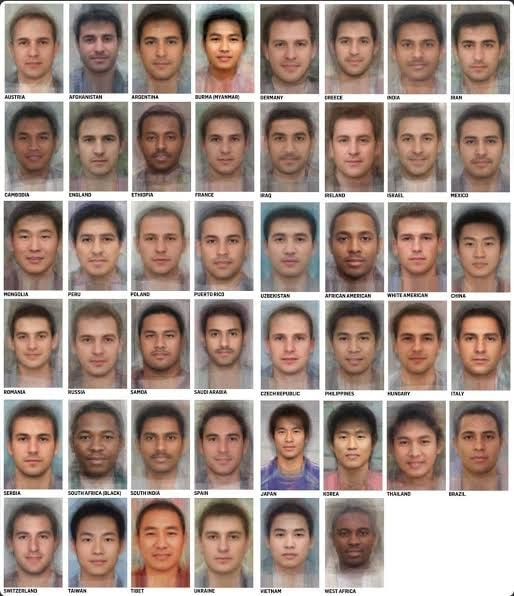

Dallas · Local News
Amber Guyger granted parole after serving 7 years for shooting, killing Botham Jean, officials confirm
Guyger, who faced anywhere from five years to life, was sentenced to 10 years in 2019. The board approved parole today. No release date has been set.
Amber Guyger, the former Dallas police officer convicted of the 2018 murder of Botham Jean, has been granted parole, according to the Texas Board of Pardons and Paroles.
Guyger was found guilty seven years ago today, on Oct. 1, 2019, of shooting and killing Jean in his home. She said she mistakenly parked on the fourth floor of the garage at the apartment building where both she and Jean lived, entered Jean’s apartment instead of her own, and shot him, believing he was an intruder.
Guyger, who faced anywhere from 5 years to life in prison, was sentenced to 10 years. A prior parole bid after five years was denied in October 2024.
Why the board approved parole
The board listed these reasons:
- The record does not include a documented pattern of violent or assaultive arrests or convictions.
- The record indicates that the offender has maintained a satisfactory institutional adjustment.
- The record indicates participation in and completion of programs and activities in the individual treatment plan that should enhance chances to obtain and maintain full-time stable employment.
The board did not say when Guyger would be released. A spokesperson for the Texas Department of Criminal Justice said the agency does not yet have an official release date.

Botham Jean family, DPD respond
After the decision, Jean’s family said in a statement:
“Two days ago, the family of Botham Jean lovingly remembered their son and brother and celebrated his life on what would have been his birthday. Today, it was reported that Amber Guyger will be paroled and will serve the remainder of her sentence under supervision. The family of Botham Jean respectfully requests privacy at this time as they process this development and continue to navigate their grief.”
Lee Merritt, an attorney for the family, said they were deeply disappointed. “Botham’s family and the community strongly opposed this parole. They stood up again and again to ask that the full sentence be served. A 10-year sentence was already a fraction of what was lost. Releasing Ms. Guyger after seven years makes that loss feel even smaller in the eyes of the system. It is not,” Merritt said.
The Dallas Police Department said parole decisions are made by the Texas Board of Pardons and Paroles and are outside the department’s authority. The Dallas County District Attorney’s office declined comment.
Family lawsuit against the City of Dallas
In March 2026, Jean’s family filed a civil lawsuit against the City of Dallas asking for nearly $100 million. The suit claims the city tried to cover up staffing gaps by assigning officers overtime, leading to fatigue and stress, and notes Guyger had clocked out from a nearly 14-hour shift the night she killed Jean. The family says the city government refused to take responsibility for his death.